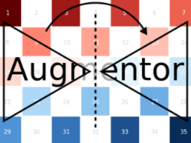

Zoom: Scale without resize
Augmentor.Zoom — Type.Zoom <: Augmentor.ImageOperationDescription
Scales the image height and image width by the specified factors, but crops the image such that the original size is preserved.
The provided factors can either be numbers or vectors of numbers.
If numbers are provided, then the operation is deterministic and will always scale the input image with the same factors.
In the case vectors are provided, then each time the operation is applied a valid index is sampled and the elements corresponding to that index are used as scaling factors.
In contrast to Scale the size of the output image is the same as the size of the input image, while the content is scaled the same way. The same effect could be achieved by following a Scale with a CropSize, with the caveat that one would need to know the exact size of the input image before-hand.
Usage
Zoom(factors)
Zoom(factors...)Arguments
factors:NTupleorVarargofRealorAbstractVectorthat denote the scale factor(s) for each array dimension. If only one variable is specified it is assumed that height and width should be scaled by the same factor(s).
See also
Examples
using Augmentor
img = testpattern()
# half the image size
augment(img, Zoom(0.5))
# uniformly scale by a random factor from 1.2, 1.3, or 1.4
augment(img, Zoom([1.2, 1.3, 1.4]))
# scale by either 0.5x0.7 or by 0.6x0.8
augment(img, Zoom([0.5, 0.6], [0.7, 0.8]))| Input | Output for Zoom(1.2) |
|---|---|
 |  |
It is also possible to pass some abstract vector to the constructor, in which case Augmentor will randomly sample one of its elements every time the operation is applied.
| Input | Samples for Zoom(0.9:0.05:1.3) |
|---|---|
|  |